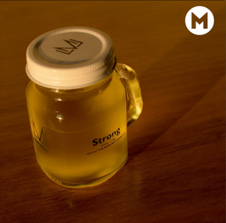

<section id="cuarta-pantalla" class="C_cuartoFormulario">
	<!--Titulos e iconos de cuarto formulario-->
	<div id="primer-row-cuarto-formulario" class="row">
		<div class="col-sm-11  C_tituloCuartoFormulario">
			<h1 id="titulo4">Registro <br id="br-cuartoFormulario" style="display: none;">citas</h1>
		</div>

		<div class="col-sm-1 C_iconoBack4">
			<div class="row iconos4FormHomeMenu">
				
				
			</div>

			<div class="row iconos4FormBack">
				<label class="col-sm-6" style="visibility: hidden;"></label>
				
			</div>

		</div>
	</div>

	<!--Resumen de cita-->
	<div id="segundo-row-cuarto-formulario" class="row">
		<!--Row de subtitulo-->
		<div class="C_subtituloCuartoFormulario">
			<p>Resumen de cita(s)</p>
		</div>

		<div class="C_contenedorDeResumenes">

			<div class="C_ContenedorResumenCitaCliente">
				<div id="datos-encapsulados-resumen">
					<div class="C_nombreCliente">
						<label>Mario Almanza</label>
					</div>

					<div class="C_imagenPerfil-circular">
						
					</div>

					<div class="C_ContenedorfechaYHoraFormulario4">
						<div id="contenedor-hecha-hora-Form4">
							<span id="referencia-para-mover-FechaHora-Formulario4"
								style="display: none;"></span>
						</div>

						<label class="C_label_oculto">Fecha y hora</label>
					</div>

					<div class="C_barberoFormualario4">
						<div class="C_iconoInfoBarbero input-group">
							<input id="nombreBarbero" type="text"
								class="form-control C_estilos-form4 C_BorderBase" readonly>
							<!--Icono que contiene la función de Tooltip de Barbero-->
							<div class="input-group-prepend C_tooltipComponente" data-bs-toggle="tooltip"
								data-bs-placement="bottom" data-bs-html="true"
								title='<div class="tooltip-barbero"> <div class="C_elementosFotoYDatosBarberosTooltip"> <span class="C_ElementoImagenTooltip">  </span> <div class="C_componenteDatosBarberosTooltip"> <span id="span_name_barber_tooltip">Antonio Marin Morales</span> <span id="span_rol_name_barber_tooltip">Barbero</span> </div> </div> <div class="C_contenedorEstrellas">      </div> </div>'>
								<span id="icono-informacion-barbero" class="input-group-text C_tooltip_input">
									<i class="fa-solid fa-circle-info" style="color: #ffffff;"></i></i>
								</span>
							</div>
						</div>
						<label>Barbero</label>
					</div>

					<div class="C_servicioFormulario4">
						<div class="C_inputInfoServicio input-group">
							<input id="nombre-servicio" class="form-control C_estilos-form4 C_BorderBase"
								type="text" readonly>

							<!--Icono que contiene la función de Tooltip de Servicio-->
							<div class="input-group-prepend C_tooltipComponente2" data-bs-toggle="tooltip"
								data-bs-placement="bottom" data-bs-html="true"
								title="<div class='tooltip-servicio'> <div class='C_elementoInformacionDeServicio'> <span id='informacion-servicio'>El corte tradicional se caracteriza por ser casi completamente simétrico y de una longitud corta o media, con un ligero desvanecido desde la altura de las sienes hasta la nuca.</span> <span id='precioServicio-tooltipServicio'>$180</span> </div> <span class='C_elementoImagenDeServicio'></span> </div>">
								<span id="icono-informacion-servicios" class="input-group-text C_tooltip_input">
									<i class="fa-solid fa-circle-info" style="color: #ffffff;"></i></i>
								</span>
							</div>

						</div>

						<label>Servicio</label>
					</div>

					<div id="producto-Formulario" class="C_iconoProductoFormulario4" data-bs-toggle="tooltip"
						data-bs-placement="bottom" data-bs-html="true"
						title='<div id="tooltip-productos"> <span id="products-title-component-tooltip"> Productos </span> <div id="products-carrusel-component-tooltip"> <div id="product-1-carrusel-component-tooltip">  <span>Cera gel</span> <span>$30</span> </div> <div id="product-1-carrusel-component-tooltip">  <span>Cera gel</span> <span>$30</span> </div> <div id="product-1-carrusel-component-tooltip">  <span>Cera gel</span> <span>$30</span> </div> </div> <div id="products-title-component-tooltip"> <span>Total de productos:</span> <span>$60</span> </div> </div>'>
						
					</div>

					<div id="div-icono-minimizarMovil4toF">
						
						
					</div>

				</div>

				<div class="C_totalAPagar">
					<label>Total a pagar: <span id="total-formulario4">$305</span></label>
				</div>
			</div>


		</div>
	</div>

	<div id="tercer-row-cuarto-formulario" class="row">
		<button id="btn-resumen-cita" class="btn btn-success">Aceptar</button>
	</div>

	<div class="C_divBrush4F">
		
	</div>


</section>